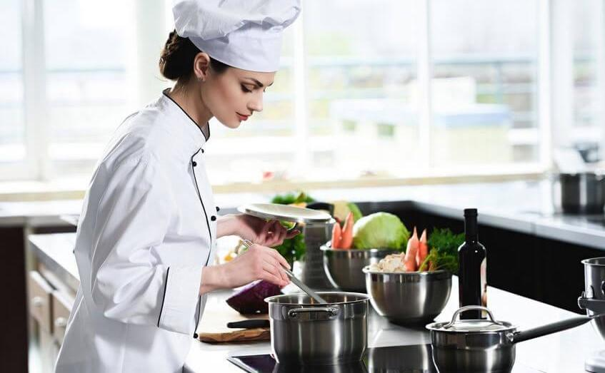

¿Quienes somos?
|  |
Nacimos con un doble objetivo: queríamos ser un restaurante donde te gusta comer y donde te gusta alojarte. Por eso tenemos un espacio funcional, luminoso y elegante. Nuestra cocina abierta responde a la necesidad de compartir nuestra pasión con nuestros clientes. Amamos lo que hacemos y nos encanta verte. Nuestra sugerencia culinaria ofrece dos alternativas, siempre de la misma calidad. |
|---|---|
| Saber más |